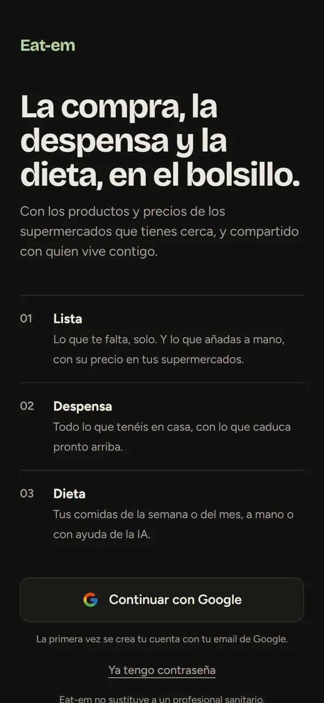

App 01 · PWA
Eat-em
Shopping, pantry and diet, in your pocket.
A mobile app shared with the people you live with: it knows what you are missing, what you have at home and what you will eat, with products and prices from the supermarkets near you.
- Shopping list shared in real time, showing where each item is cheapest
- Pantry with expiry dates, alerts and a barcode scanner
- Meal plan for the week or month filled in by AI from your profile, with health guardrails
- Daily price scrapers on GitHub Actions, matched with Open Food Facts
~80,000products
5supermarket chains
~18,900stores on the map
// How the AI works
- Model
- Nemotron 3.5 Super (NVIDIA) via OpenRouter, with a fallback model if the main one is withdrawn.
text-embedding-3-smallembeddings. - Prompt
- Structured Outputs with a strict JSON Schema and temperature 0.3. The code checks calories, macros and ingredients and, on failure, retries up to twice, feeding the errors back to the model.
- RAG
- Nutrition guideline cards embedded in pgvector (Supabase); the relevant ones are retrieved and added to the context.
- Guardrails
- A pre-filter in code runs before any AI call: minors, pregnancy, breastfeeding, medical conditions or BMI < 18.5 are referred to a professional. Only catalogue ingredients are allowed.
- Evaluation
- A 50-question test suite. Latest run (20): 100% on guardrails and 0 made-up ingredients.
- Cost
- €0 per request: free model, with a quota of about 50 requests a day.
Next.jsReactTypeScriptSupabasepgvectorOpenRouterStructured OutputsTailwindGitHub ActionsVercel
